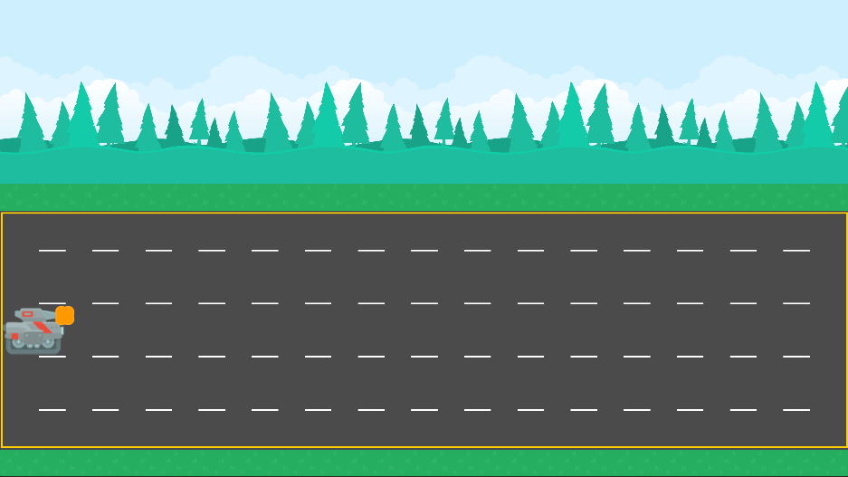

Lane Defender
08/26/24 - 09/02/24My first college Unity Project. I was tasked with recreating a game that was shown in class, by my professor. I was also given the art assets and just had to put them together in the scene to faithfully try to recreate as much of the game as possible. I used OOP to handle the three different types of enemies, along with AudioManagers and PlayerPrefabs for saving data. When the deadline came, I got full marks for all of my work.
Skills Used
- C#
- Unity
- OOP
Pinky's Dungeon Adventure

09/03/24 - PresentThe semester-long game that was created for my gamedev course. I took on the role of the lead artist and also lead programmer. With my initiative and passionate drive, I was able to fufill most of our overscoped features on time by the deadlines. OOP utilized very heavily here for logic of player, enemies, bosses and their unit variants, singletons, MVC, etc. Using my CS background, I was able to optimize our code through concepts of polymorphism, generics, inheritance and many others.
Skills Used
- Digital Art/Pixel Art
- C#
- OOP